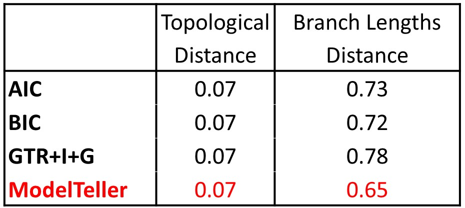

Phylogenetic Model Selection
Model Selection is considered as a mandatory first step for phylogeny reconstruction. Currently, this task is accomplished by computing the likelihood of every candidate model to the data, and eventually selecting the best-fitted one. However, this approach comes with several problems. First, the requirement to compute the likelihood of every single model in order to get the single best one is highly time consuming. Second, statistical model selection criteria are not optimized for phylogenetics. Some criteria, like the AIC or the BIC assume independence of the data particles (such as the alignment sites or the nucleotides within the alignment, which are clearly dependent). Some, like the hLRT or the AIC assume infinite data size. Ultimately, the choice for the best model is neither efficient, nor it is established.
What is ModelTeller?
ModelTeller is a machine learning algorithm that is trained and optimized to retrieve the nucleotide substitution model that yields the most accurate tree. ModelTeller was trained across 15,000 alignments that were sampled from empirical cases. These range across a wide range of sequence lengths, number of sequences, and sequence divergences. ModelTeller was optimized to predict the model that generates a tree of lowest distance to the true one (in simulations).
How to use ModelTeller?
All you need to do is upload the alignment or multiple consecutive alignments within a file or inside the textbox. ModelTeller will read your input, compute the relevant features, and report the best model for each of the alignments.
Input
ModelTeller is implemented in python and accepts as input any alignment file format that is valid in Biopython (listed below). Once you upload the alignment, ModelTeller detects the format and continues the computation:
- clustal - output from Clustal W or X.
- emboss - EMBOSS tools' "pairs" and "simple" alignment formats.
- fasta - the generic sequence file format where each record starts with an identifier line starting with a ">" character, followed by lines of sequence.
- ig - the IntelliGenetics file format, apparently the same as the MASE alignment format.
- nexus - output from NEXUS.
- phylip/phylip-sequential/phylip-relaxed.
- stockholm - a richly annotated alignment file format used by PFAM.
- mauve - output from progressiveMauve/Mauve.
In case that ModelTeller could not read your input file, it would notify you with an error message.
The substitution models
ModelTeller incorporates 24 nucleotide substitution models. Those include : Jukes and Cantor (JC)[1], Felsenstein 1981 (F81)[2], Kimura two parameters (K2P)[3], Hasegawa-Kishino-Yano (HKY)[4], the generalized symmetrical model (SYM)[5], and General Time Reversible (GTR)[6], combined with the proportion of invariable sites (+I), rate heterogeneity across sites (+G), or both (+I+G).
ModelTeller running time
Whereas the statistical methods for phylogenetic reconstruction may take hours or even days of computation, ModelTeller can retrieve results instantly! For a set of 15,000 datasets ModelTeller ran in 9.6
seconds on average, whereas the maximum likelihood approaches ran 12.5
minutes on average.
ModelTeller accuracy
The computational approach of ModelTeller yields more accurate results than the statistical approaches, as it is optimized to predict the closest tree. The table below shows the average of the topological distance (Robinson-Foulds7) or the branch length distance (Euclidean distance of the branches8) between the reconstructed trees of each method and the true tree across the 15,000 datasets in the training set. The predictions were made with a cross-validation procedure.

References
[1] Jukes, T. H. & CANTOR, C. R. in Mammalian Protein Metabolism 21-132 (Academic Press, 1969).
[2] Felsenstein, J. Evolutionary trees from DNA sequences: A maximum likelihood approach. J. Mol. Evol. 17, 368-376 (1981).
[3] Kimura, M. A simple method for estimating evolutionary rates of base substitutions through comparative studies of nucleotide sequences. J. Mol. Evol. 16, 111-120 (1980).
[4] Hasegawa, M., Kishino, H. & Yano, T. aki. Dating of the human-ape splitting by a molecular clock of mitochondrial DNA. J. Mol. Evol. 22, 160-174 (1985).
[5] Zharkikh, A. Estimation of evolutionary distances between nucleotide sequences. J. Mol. Evol. 39, 315-329 (1994).
[6] Tavare, S. in Lectures on Mathematics in the Life Sciences. 17, 57-86 (American Mathematical Society, 1986).
[7] Robinson, D. F. & Foulds, L. R. Comparison of phylogenetic trees. Math. Biosci. 53, 131-147 (1981).
[8] Kuhner, M. K. & Felsenstein, J. A simulation comparison of phylogeny algorithms under equal and unequal evolutionary rates. Mol Biol Evol 11, 459-468 (1994).